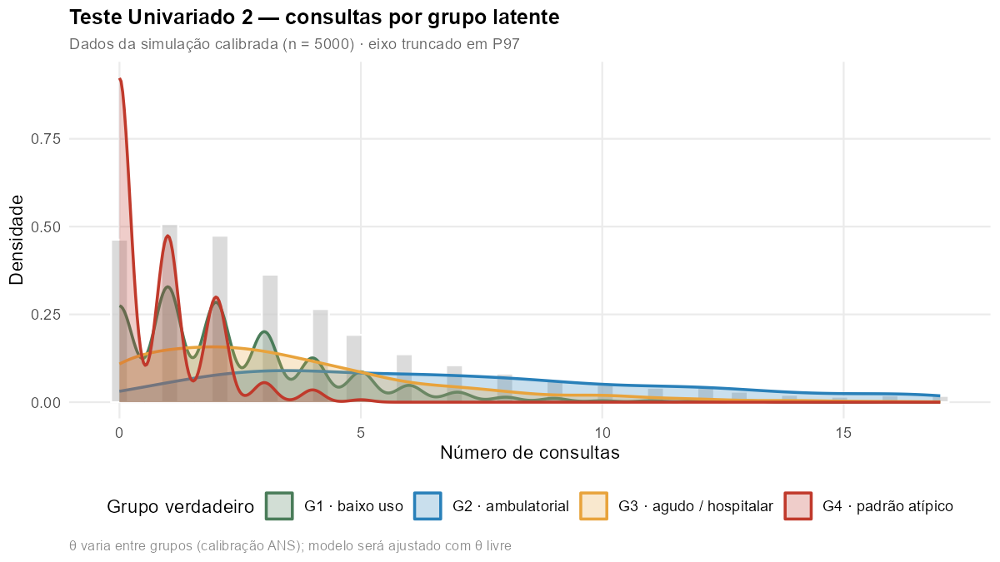
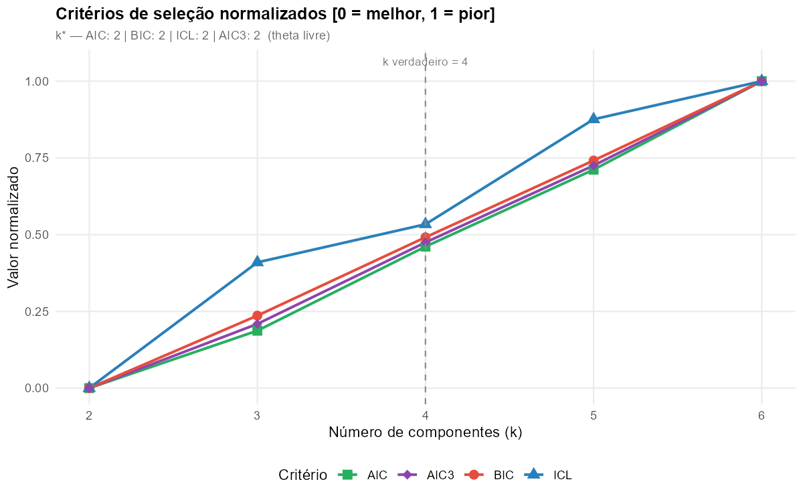
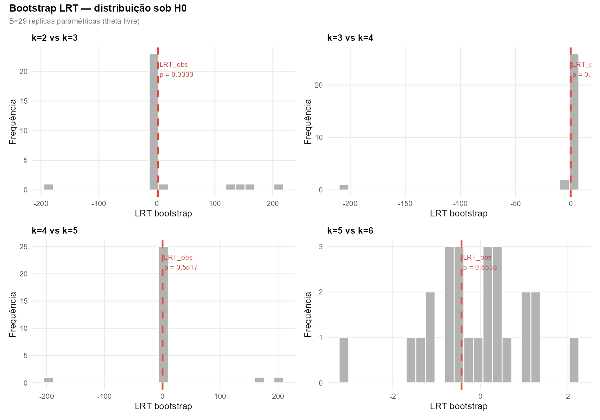
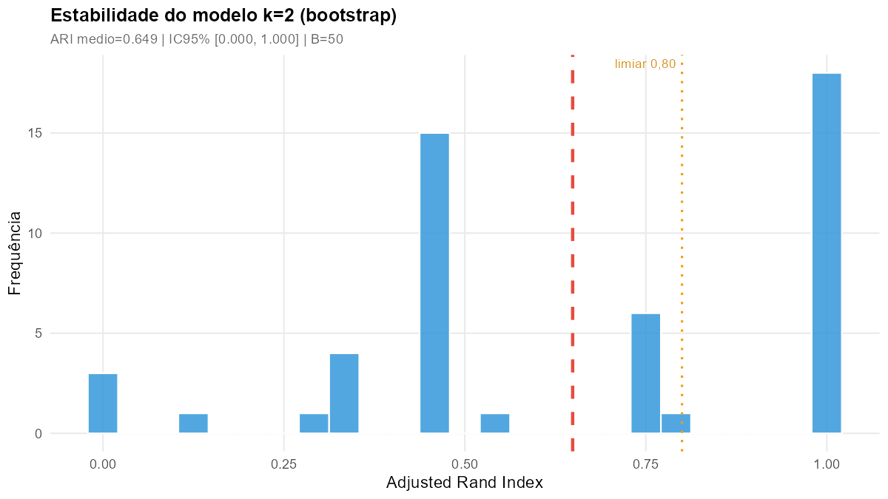
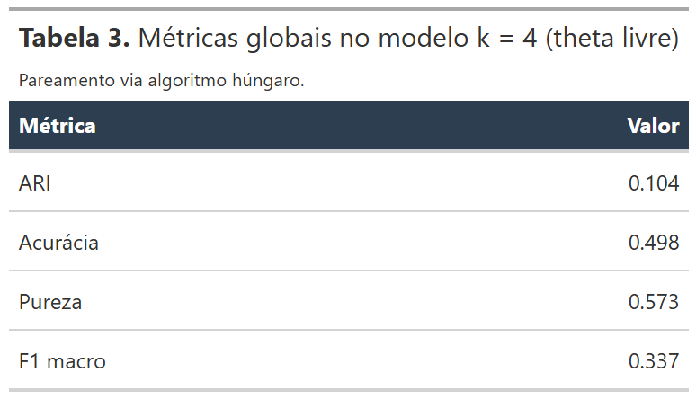
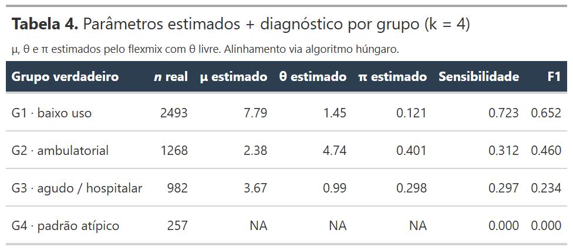
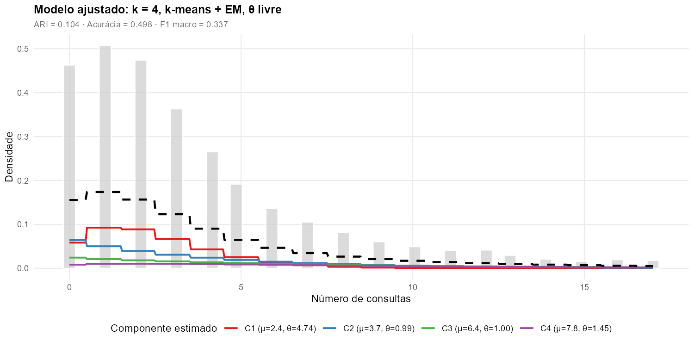
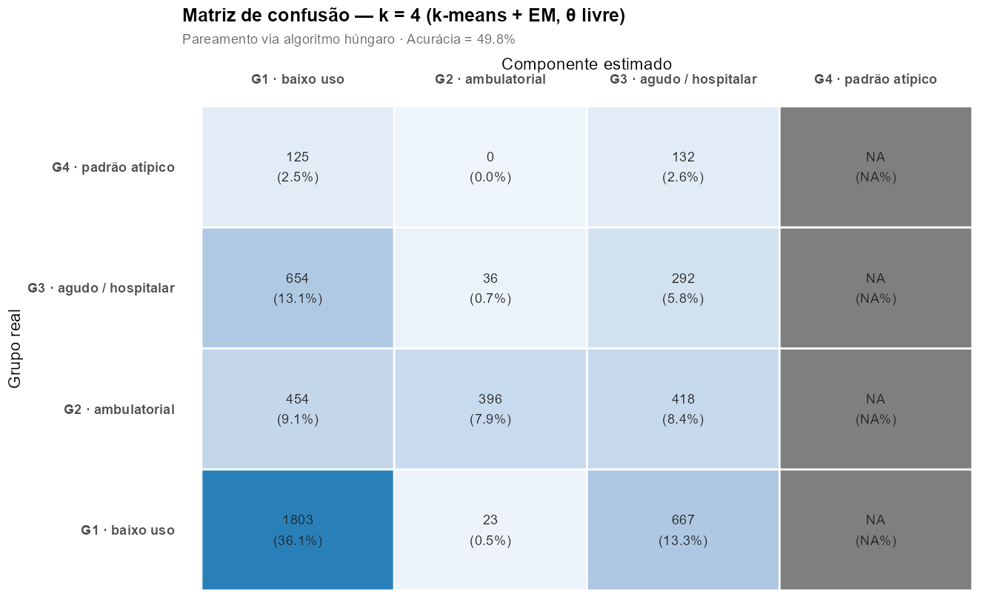
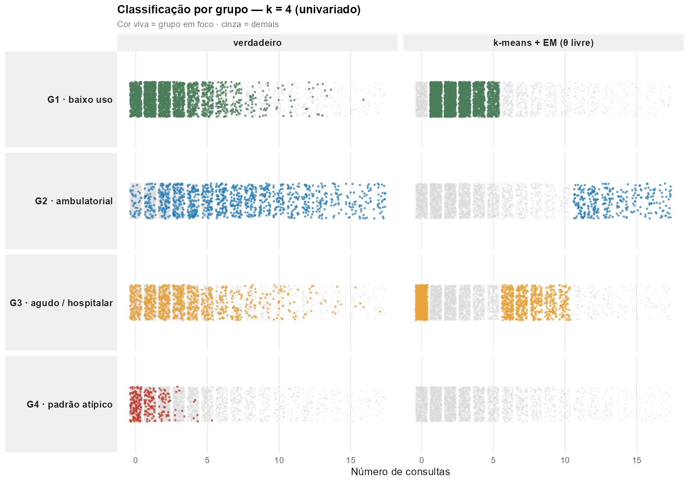
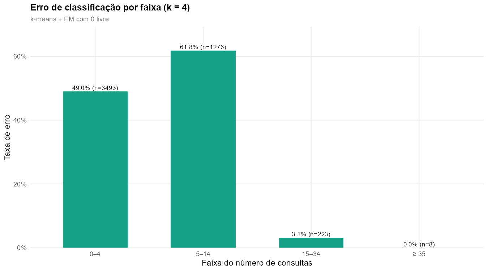

Teste Univariado 2
Mistura de Binomial Negativa sobre a variável consultas da
simulação calibrada, com θ livre por componente, inicialização
por k-means + EM e avaliação por AIC, BIC, ICL, AIC3 e Bootstrap LRT
via biblioteca flexmix
Segundo teste da série univariada. Difere do Teste 1 em três pontos centrais: os dados não são gerados ad hoc, mas extraídos da simulação calibrada do projeto (ANS); o parâmetro de dispersão θ é livre por componente (não fixo); e apenas uma estratégia de inicialização é empregada — k-means + EM, que o Teste 1 identificou como a configuração computacionalmente mais eficiente sem perda de qualidade.
Pergunta investigada: a variável consultas, isoladamente, contém informação suficiente para que o flexmix com θ livre recupere os quatro grupos latentes da simulação? Em caso negativo, quantos componentes são empiricamente identificáveis a partir dessa única dimensão?
- Motivação e desenho
- Dados da simulação
- Configuração do experimento
- Resultados — Módulo A · Critérios penalizados
- Resultados — Módulo B · Bootstrap LRT
- Resultados — Módulo C · Estabilidade
- Resultados — Módulo D · Avaliação em k = 4
- Discussão
- Comparação com o Teste 1
- Conclusões
- Próximos passos
- Referências
1 · Motivação e desenho
O Teste Univariado 1 demonstrou, sob condições controladas (μ bem espaçadas, θ constante), que o flexmix com k-means + EM e Bootstrap LRT recupera corretamente os quatro grupos latentes a partir da variável consultas. Este Teste 2 transporta o mesmo protocolo para a simulação calibrada do projeto — dados que reproduzem a estrutura observada nos indicadores oficiais da ANS — relaxando, simultaneamente, a hipótese de θ constante.
Trata-se, portanto, de um teste de robustez externa: se a metodologia validada no cenário "limpo" do Teste 1 sobrevive quando confrontada com uma distribuição mais próxima do que se observa em dados administrativos reais.
2 · Dados da simulação
O conjunto de dados utilizado é o produzido pela simulação do projeto (\(n = 5\,000\) beneficiários, 4 grupos latentes calibrados a indicadores oficiais da ANS). Restringe-se a análise à variável consultas, descartando-se as demais cinco dimensões.
| Grupo verdadeiro | n | % do total |
|---|---|---|
| G1 · baixo uso | 2.493 | 49,9 % |
| G2 · ambulatorial coordenado | 1.268 | 25,4 % |
| G3 · agudo / hospitalar | 982 | 19,6 % |
| G4 · padrão atípico | 257 | 5,1 % |

Figura 1. Densidade empírica do número de consultas por grupo latente verdadeiro. Os quatro grupos apresentam sobreposição substancial na distribuição marginal: G3 (agudo) e G4 (atípico), em particular, ocupam regiões largamente sobrepostas da cauda direita. Eixo truncado em P97.
3 · Configuração do experimento
| Parâmetro | Configuração |
|---|---|
| Dados | dados/dados_simulados.csv, coluna
consultas (\(n = 5\,000\)) |
| Modelo | Mistura finita de Binomial Negativa univariada, \(f(x \mid \Theta) = \sum_{k=1}^{g} \pi_k \cdot \text{NB}(x \mid \mu_k, \theta_k)\) |
| Parametrização | θ livre por componente — diferente do Teste 1, onde θ = 2,5 era fixo |
| Inicialização | k-means + EM (única estratégia; Teste 1 identificou-a como ótima) |
| Cardinalidades | \(g \in \{2, 3, 4, 5, 6\}\) |
| Critérios de seleção | AIC, BIC, ICL, AIC3 e Bootstrap LRT (\(B = 29\) réplicas) |
| Estabilidade | Bootstrap não-paramétrico via ARI (\(B = 50\)) |
| Implementação | R + flexmix::flexmix com FLXMRnegbin()
(de countreg) sem argumento theta;
peso mínimo \(\pi_k \geq 0{,}005\) |
src/03_analises/05_teste_univariado_2.R. Saídas em
docs/assets/img/teste_univariado_2/.
4 · Resultados — Módulo A · Critérios penalizados
Para cada \(g \in \{2,\ldots,6\}\), ajusta-se um modelo NB com k-means + EM e calcula-se log-verossimilhança, AIC, BIC, ICL e AIC3.

Figura 2. Critérios AIC, BIC, ICL e AIC3 normalizados [0 = melhor, 1 = pior] em função do número de componentes \(g\). Linha tracejada: \(g\) verdadeiro = 4. Todos os quatro critérios selecionam \(g = 2\) — o conjunto univariado das consultas não justifica modelos mais complexos.
| g | log-Lik | np | AIC | BIC | ICL | AIC3 |
|---|---|---|---|---|---|---|
| 2 | −12575,9 | 5 | 25161,8 | 25194,3 | 25441 | 25166,8 |
| 3 | −12575,0 | 8 | 25166,0 | 25218,1 | 26068 | 25174,0 |
| 4 | −12575,0 | 11 | 25172,0 | 25243,7 | 26649 | 25183,0 |
| 5 | −12574,8 | 14 | 25177,7 | 25268,9 | 27195 | 25191,7 |
| 6 | −12575,0 | 17 | 25184,0 | 25294,9 | 27721 | 25201,0 |
5 · Resultados — Módulo B · Bootstrap LRT
O Bootstrap LRT é o teste paramétrico mais robusto para a seleção de \(g\) em misturas — não depende de aproximações assintóticas (McLachlan, 1987). Para cada par \((g, g+1)\), simulam-se \(B = 29\) amostras paramétricas sob o modelo de \(g\) componentes e recalcula-se o LRT.

Figura 3. Distribuições bootstrap da estatística LRT sob \(H_0\) para cada par sequencial \((g, g+1)\). A linha vermelha tracejada indica o LRT observado nos dados; em todos os quatro pares, o LRT observado situa-se no centro da distribuição nula, configurando p-valores não significativos.
| g | g+1 | LRT observado | p-valor | B válidos | Rejeita H₀? |
|---|---|---|---|---|---|
| 2 | 3 | 1,8 | 0,333 | 29 | Não |
| 3 | 4 | −0,1 | 0,700 | 29 | Não |
| 4 | 5 | 0,4 | 0,552 | 28 | Não |
| 5 | 6 | −0,4 | 0,654 | 25 | Não |
6 · Resultados — Módulo C · Estabilidade do modelo final
O modelo final por consenso (\(g_{\text{final}} = 2\)) foi avaliado por bootstrap não-paramétrico (\(B = 50\) reamostragens com reposição), com ARI entre a partição original e a de cada réplica.

Figura 4. Distribuição bootstrap do Adjusted Rand Index entre a partição original (\(g = 2\)) e as partições obtidas em 50 reamostragens. ARI médio = 0,649; IC 95% = [0,000; 1,000]. A amplitude extrema do intervalo de confiança revela que, embora a média seja moderadamente alta, há réplicas em que o algoritmo converge para soluções qualitativamente distintas — indicador de instabilidade.
7 · Resultados — Módulo D · Avaliação forçada em k = 4
Embora os critérios indiquem \(g = 2\), interessa avaliar o que acontece quando o modelo é forçado a ajustar \(g = 4\) componentes — a cardinalidade verdadeira da simulação. Esta análise quantifica o quanto da estrutura latente pode ser recuperada na "melhor hipótese" possível.

Tabela 3. Métricas globais em \(g = 4\): ARI = 0,10; Acurácia = 0,498; Pureza = 0,573; F1 macro = 0,337. Todos os indicadores ficam próximos do nível esperado por classificação aleatória ponderada pelos tamanhos dos grupos verdadeiros.

Tabela 4. Parâmetros estimados (μ, θ, π) por componente, alinhados aos grupos verdadeiros via algoritmo húngaro, e diagnósticos de sensibilidade e F1 por grupo.

Figura 5. Modelo ajustado em \(g = 4\): componentes NB estimados (linhas coloridas) e mistura total (linha tracejada preta) sobrepostos ao histograma dos dados. Apesar do bom ajuste da densidade marginal global, a partição interna é falha — vide matriz de confusão.

Figura 6. Matriz de confusão após pareamento húngaro entre os 4 componentes estimados e os 4 grupos verdadeiros. A diagonal principal — proporção de classificações corretas — concentra apenas ≈ 50 % das observações, com contaminação cruzada substancial entre todos os pares de grupos.

Figura 7. Strip plot 4 × 2: por linha, um grupo verdadeiro; por coluna, classificação verdadeira e estimada. A diferença entre as duas colunas, em cada linha, mede o erro de classificação visualmente — particularmente severo em G3 e G4.

Figura 8. Taxa de erro de classificação por faixa do número de consultas. A faixa intermediária concentra a maior parcela do erro: é onde múltiplos grupos verdadeiros coabitam a mesma região da reta real.
8 · Discussão
O resultado central deste teste é um achado negativo metodologicamente informativo: nenhum dos cinco critérios testados — inclusive o Bootstrap LRT, que no Teste 1 mostrou-se sensível a ganhos marginais de log-verossimilhança — recupera os quatro grupos da simulação a partir da variável consultas isolada.
Por que ocorre o subajuste
A simulação é construída de forma a respeitar a estrutura observada nos indicadores oficiais (ANS), o que produz distribuições marginais que se sobrepõem substancialmente em qualquer dimensão individual. O grupo G1 (baixo uso) concentra metade da população com valores próximos de zero; G2, G3 e G4 ocupam regiões parcialmente compartilhadas da cauda direita. Ao colapsar essas quatro distribuições em uma única dimensão, parte da informação discriminante é irrecuperável.
“The solution provided by ICL [and consistent penalised criteria more generally] is consistent for the number of well-separated clusters, not for the number of components in the mixture.” Baudry (2015). Electronic Journal of Statistics, 9(1), 1041–1077.
O ajuste em k = 4 não está "errado" — está sub-determinado
A Figura 5 mostra que, em \(g = 4\), o modelo ajusta razoavelmente bem a densidade marginal global (linha tracejada). O problema não está na estimação dos parâmetros, mas na atribuição das observações aos componentes: os quatro componentes estimados não correspondem aos quatro grupos geradores. A função de verossimilhança simplesmente não discrimina, na dimensão consultas, soluções com 2 e com 4 componentes.
9 · Comparação com o Teste 1
| Aspecto | Teste 1 (limpo) | Teste 2 (calibrado ANS) |
|---|---|---|
| Origem dos dados | rnbinom() com μ = (2, 12, 25, 50), θ = 2,5
constante |
simulação calibrada (ANS), μ e θ implícitos |
| θ no ajuste | fixo (2,5) | livre por componente |
| k* por AIC/BIC/ICL/AIC3 | 3 / 3 / 2 / 3 | 2 / 2 / 2 / 2 |
| k* por BLRT | 4 ✓ (verdade) | 2 ✗ (subajuste) |
| ARI em \(g = 4\) | 0,34 | 0,10 |
| Acurácia em \(g = 4\) | 0,625 | 0,498 |
| ARI bootstrap (g final) | 0,894 (IC [0,724; 1,000]) | 0,649 (IC [0,000; 1,000]) |
| Conclusão | Univariado basta para revelar 4 grupos quando bem espaçados e θ constante | Univariado insuficiente sob sobreposição realista — necessidade de múltiplas variáveis |
10 · Conclusões
11 · Próximos passos
- Teste Univariado 3: ampliar a análise para o espaço bivariado, adicionando a variável internações ou exames a consultas. Quantificar a partir de quantas dimensões os critérios começam a recuperar \(g = 4\) — caracteriza uma "rampa metodológica" entre o presente teste e a análise multivariada principal.
- Variação sistemática da sobredispersão simulada: refazer o presente teste com diferentes graus de sobreposição artificial entre grupos para mapear a fronteira em que o BLRT deixa de operar.
- Comparação com mistura zero-inflada (ZINB): G1 (baixo uso) tem mediana próxima de zero. Avaliar se uma mistura ZINB captura melhor a estrutura — especialmente o componente de zeros estruturais.